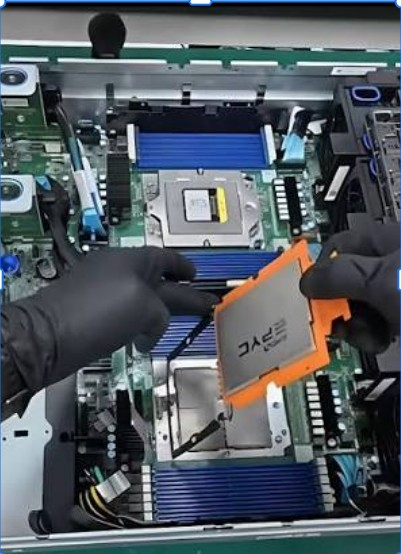
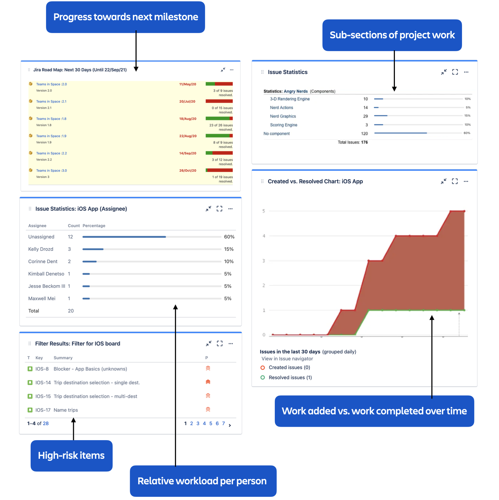
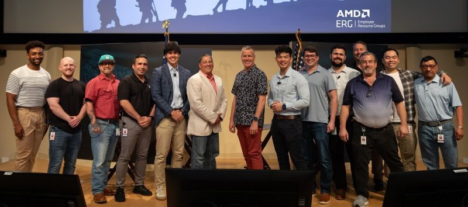

20%+
Business outcome: faster issue / debug cycles after standardizing ownership, closure criteria, escalation paths, and daily technical operating cadence.
I lead complex technical programs where hardware, infrastructure, data, engineering, and operations intersect — turning ambiguity into executable systems, measurable outcomes, and scalable operating models.
Austin, Texas · Open to California / Bay Area relocation

My work is usually the connective tissue between engineering depth and organizational execution: readiness, schedule, data quality, risk, suppliers, customer commitments, and executive decision-making.
Business outcome: faster issue / debug cycles after standardizing ownership, closure criteria, escalation paths, and daily technical operating cadence.
Business outcome: validation-automation metadata accuracy after data realignment, governance improvements, and stronger program / lab integration.
Business outcome: schedule acceleration on a nine-month GPU program using critical-path analysis, dependency management, and risk burn-down.
Leadership scope: soldiers directly led, backed by 6+ years of direct people management and an adaptive approach to personalities, motivators, and performance.
Scope: concurrent hardware-to-data-center readiness workstreams coordinated across architecture, NPI, capacity, engineering, operations, and deployment.
Action: governed a 29-platform Rack Catalogue across 74 engineering attributes connecting hardware facts to facility decisions.
Scope: supported readiness for high-density AI rack platforms approaching this power envelope across power, cooling, structure, routing, and serviceability.
Business outcome: caught a per-rack planning discrepancy before downstream capacity assumptions — approximately a 30%–38% overstatement.
Military engineering, semiconductor validation, endurance racing, and hyperscale infrastructure all taught me the same thing: the plan matters, but the ability to adapt without losing the objective matters more.



At AMD, I built and ran operating mechanisms around complex GPU and server programs where silicon, firmware, software, hardware, validation, suppliers, labs, and customer-readiness teams needed a faster path from failure signal to decision and closure.



Scope: a broad OCI rack/platform portfolio spanning current and forward-looking deployments across AMD, NVIDIA, Google, and other accelerator ecosystems. Action: connect physical integration, planning values, telemetry, data products, governance, and deployment execution. Business outcome: earlier infrastructure risk visibility, stronger technical decision confidence, and repeatable readiness mechanisms for increasingly dense AI platforms.
Connected platform inputs to owners, milestones, risks, evidence, readiness gates, executive decisions, and facility constraints — power, cooling, structural, routing, serviceability, safety, capacity, and operations.
Hardware-to-data-center readiness workstreams coordinated across architecture, NPI, capacity, engineering, operations, and deployment.
29-platform Rack Catalogue governed across 74 engineering attributes connecting hardware requirements to facility decisions.
Engineering source / evidence register entries established to improve provenance, change control, accountability, and decision confidence.
Per-rack planning discrepancy identified before downstream capacity assumptions — roughly a 30%–38% overstatement.
High-density rack readiness supported for platforms approaching this power envelope, aligning hardware facts to facility constraints.
Separate electrical variance surfaced that affected deployment configuration and required earlier cross-functional visibility.
Power, thermal, mechanical, dimensions, weight, liquid cooling, leak detection, serviceability, movement, site readiness, and interface governance.
Power and airflow methodology, characterization signal, actual-vs-plan analysis, telemetry, conservative-assumption reduction, and capacity decision support.
Hardware characteristics, data-quality checks, source registers, reusable pipelines, dashboard enablement, certified data, and lower manual reconciliation.
Jira / Confluence operating model, readiness reviews, cross-org sequencing, executive synthesis, stakeholder education, and business-rhythm integration.
Directional estimate across governance efficiency, hardware-data quality, earlier risk detection, reduced manual reconciliation, better deployment decision-making, and avoided late-stage rework. The larger upside is the repeatable infrastructure created for future programs.
A career built across AI infrastructure, GPU / HBM validation, server platforms, engineering operations, people leadership, and mission-critical execution — with each role increasing the scale of systems, dependencies, and decisions.
The strongest role fit sits at the intersection of technical program management, AI / data-center infrastructure delivery, hardware platform execution, engineering operations, service readiness, and cross-functional leadership.
Principal Technical Program Manager · Senior Technical Program Manager · AI Infrastructure TPM · Data Center Program Manager · Hardware Program Manager · Infrastructure Program Manager · Engineering Operations Program Manager · NPI / Product Operations Program Manager.
AI infrastructure · data center infrastructure · cloud infrastructure · hardware integration · NPI · enterprise service delivery · capacity planning · validation and debug · readiness governance · supplier coordination · technical operations · customer alignment.
GPU platforms · HBM · server platforms · rack integration · power · cooling · liquid cooling · thermal / mechanical integration · firmware · RAS · telemetry · characterization · analytics pipelines · infrastructure data products.
Cross-functional leadership · critical-path management · dependency management · issue triage · risk burn-down · stakeholder management · vendor management · executive reporting · requirements traceability · Jira · Qtest · Power BI · Confluence · SharePoint · Jama.
I’m exploring Senior / Principal TPM opportunities where complex engineering, AI infrastructure, hardware systems, enterprise service delivery, or technical operations need grounded technical judgment and scalable execution.
Yes, that’s me hiding in a plant. No, I don’t regret it.
If you made it this far, you’re probably the kind of curious, slightly-too-passionate person I enjoy working with. I’m Floyd — engineer by training, TPM by trade, and goofball by choice.
I take infrastructure, programs, and people seriously. Myself? Selectively.